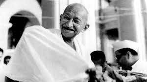

Mohandas Karamchand Gandhi
The one who brought peace without a Prize

The title of Mahatma, bestowed upon him, signifies the purity in his thoughts, words, and deeds.
Here's a timeline of Mahatma Gandhi's life
Early life (1869-18888)
- October 2, 1869: Mohandas Karamchand Gandhi was born in Porbandar, Gujarat, India, into a Hindu merchant caste family.
- Education: Gandhi studied law in London, England, and was called to the bar in 1891.
- Influences: During this time, he was exposed to Western influences and ideas such as civil liberties, and also came into contact with theosophy and the Bhagavad Gita, which shaped his philosophical outlook.
South Africa Years (1893-1914)
- Gandhi's legal career led him to South Africa, where he encountered racial discrimination firsthand.
- Activism: He became an advocate for the rights of Indians in South Africa, leading civil disobedience campaigns against discriminatory laws like the Asiatic Registration Act and the Poll Tax.
- Development of Satyagraha: His experiences in South Africa led to the development of his philosophy of Satyagraha (truth-force), a nonviolent resistance movement.
Return to India (1915):
- Gandhi returned to India and became involved in the Indian nationalist movement, advocating for independence from British rule.
- Leadership: He assumed leadership of the Indian National Congress and led several campaigns, such as the Non-Cooperation Movement and the Salt March, which aimed to challenge British authority through nonviolent means.
- Civil Disobedience: Gandhi encouraged Indians to resist British rule through nonviolent civil disobedience, including boycotts, strikes, and peaceful protests.
- Imprisonment: He was arrested numerous times for his activism and spent a total of around seven years in prison.
- Negotiations: Gandhi negotiated with British authorities and participated in various rounds of talks to achieve Indian independence.
- Independence: India gained independence from British rule on August 15, 1947.
- Tragic Division: The country was partitioned into India and Pakistan, leading to widespread violence and displacement.
- Assassination: On January 30, 1948, Gandhi was assassinated by Nathuram Godse, a Hindu nationalist who opposed Gandhi's tolerant views towards Muslims.